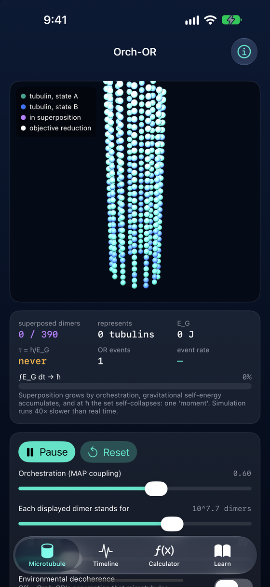
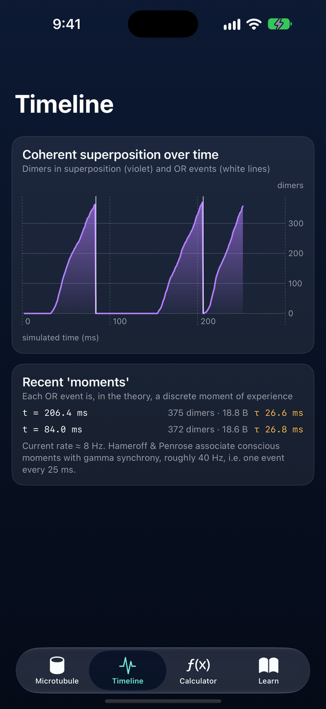
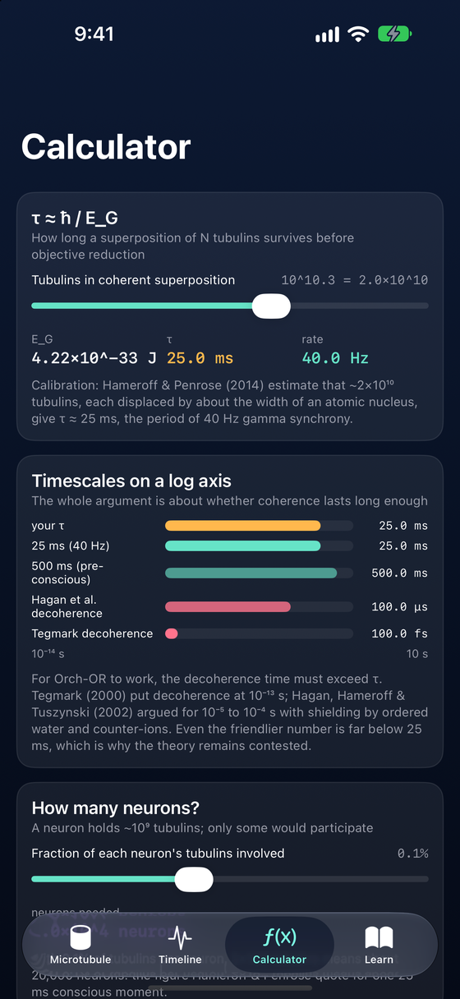
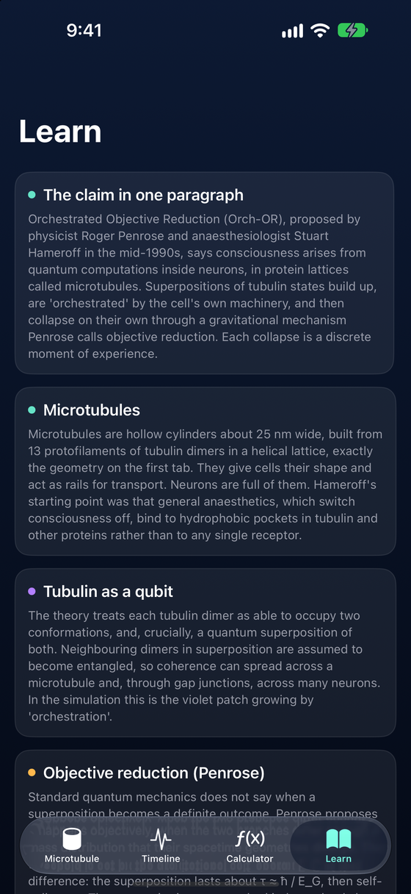
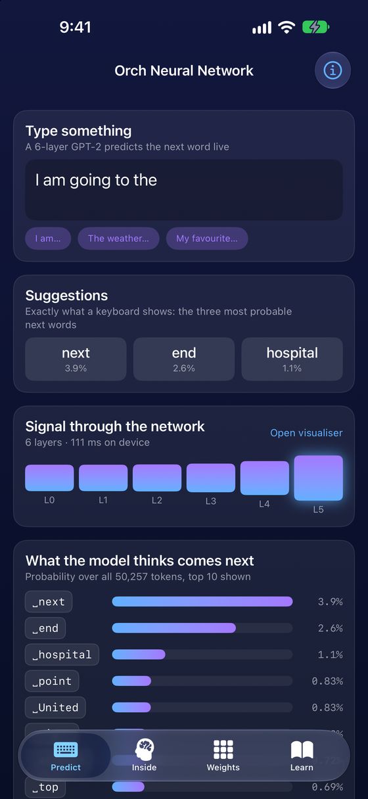
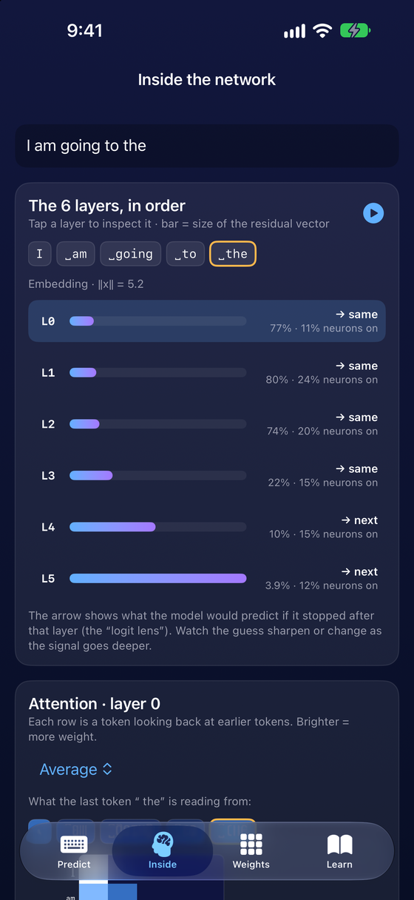

iPhone · iPad · Browser
The Penrose–Hameroff theory of consciousness as a model you can run, poke, and argue with.
Version 1.0 is in App Store review. Free. No account, no data collected.
Drag to rotate, scroll to zoom. Same model as the app: superposition (violet) grows by orchestration, ∫EGdt climbs to ħ, then the coherent set collapses in a white flash.




A 13-protofilament tubulin lattice you can spin and zoom. Superposition seeds, spreads by orchestration, collapses in a flash of objective reduction.
Gravitational self-energy EG, the collapse time τ = ħ/EG, and the running ∫EGdt → ħ that triggers each event, calibrated to Hameroff & Penrose (2014).
Coherence over time and every collapse, with the event rate set against 40 Hz gamma synchrony.
Switch on environmental decoherence at Tegmark's 10⁻¹³ s or Hagan et al.'s 10⁻⁴ s and see whether coherence ever survives.
How many tubulins and neurons a 25 ms moment would need, with every relevant timescale on one log axis.
Nine short cards: the claim, the mechanism, the 40 Hz argument, the decoherence objection, the evidence, and where the theory stands. Eleven references.
Orchestrated Objective Reduction is Roger Penrose's and Stuart Hameroff's proposal that consciousness arises from quantum events inside the microtubules of neurons. Tubulin proteins enter superpositions, become entangled across the lattice, and collapse on their own through a gravitational mechanism Penrose calls objective reduction. Each collapse is a discrete moment of experience.
The threshold is set by the gravitational self-energy of the difference between the superposed branches. Hameroff and Penrose calibrate it so that about 2×10¹⁰ tubulins self-collapse in 25 ms, matching 40 Hz gamma synchrony.
The main objection is decoherence. The brain is warm and wet; Max Tegmark put microtubule coherence at 10⁻¹³ s, and Hagan, Hameroff and Tuszynski argued for 10⁻⁴ s with shielding. Both fall short of 25 ms. A companion simulation of the theory on tubulin qubits finds that 40 Hz moments need coherence lasting about 76 ms: paper and code.
Orch-OR is a minority view in neuroscience. This is a teaching model of a contested theory, and says so.
A sister app that runs a real 82-million-parameter GPT-2 on your device and lets you watch it predict your next word, layer by layer: attention heads, firing neurons, the logit lens, and every weight matrix as a heatmap. Framed as how your keyboard's suggestions work.
Also in review. Link goes live on approval. Code.

